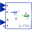
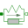

UtilitiesUtility classes used by translational example models |
|
Package Contents
|
Generate Stribeck friction table for example Friction for the SupportFriction |
|
|
Input/output block of a direct mass model |
|
|  |
Input/output block of an inverse mass model |
|
Input/output block of a spring/damper model |
|
|
Input/output block of a spring model |
|
|  |
Linear 1D translational spring and damper in parallel (s and v are not used as states) |
Information
This information is part of the Modelica Standard Library maintained by the Modelica Association.
This package contains utility models and functions used by some of the example models from the translational mechanics package.